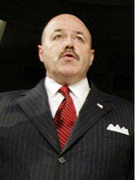

Freedom is about authority. Freedom is about the willingness of every single human being to cede to lawful authority a great deal of discretion about what you do.
(Thanks to Anthony Gregory for the tip on that quote.)

Political criticism is our enemy's best friend.
Bernard Kerik, October 20, 2003
According to Fascism, a true, a great spiritual life cannot take place unless the State has risen to a position of pre-eminence in the world of man. The curtailment of liberty thus becomes justified at once, with this need of raising the State to its rightful position.
Fascist Party ideological spokesman Mario Palmieri, 1936 (The Philosophy of Fascism -- Chicago: The Dante Alighieri Society, 1936, pg 99.)
For the discerning talk radio consumer, Dennis Miller's Mensa-level snarkiness plays much better than Sean Hannity's pugnacious ignorance. But take away Miller's wit and literacy, his ability to speak in complete sentences, and his ability to refine GOP talking points into something that sounds like his personal opinions, and what remains is pretty much the same message Hannity feeds tirelessly to the mouth-breathing cultists who compose his core audience: The President's gotta keep that pimp hand strong, or the “Islamo-Fascists” will defeat us.
In Rudolph Giuliani, both Hannity and Miller see George W. Bush's ideal successor. Hannity, aware that his core audience cares about such things as abortion and traditional marriage, does cavil somewhat about Rudy's, shall we say, unconventional personal life (imagine the sitcom version of Jerry Seinfeld as a sociopathic politician with the world's least persuasive comb-over, and you've got Mayor Rudy) and his liberal views of social issues.
But the important thing, Hannity insists, is that the next president focus primarily on fighting the war on terror, both at home and abroad.
Miller is refreshingly candid about the same priorities – which define the president Republican agenda.
Dispensing with all pretense of concern about social issues, Miller believes that the public is ready for an unapologetically authoritarian president, and, in Giuliani, Il Duce and the moment have met.
Portrait of Il Duce as La Regina: Rudy in drag.
Giuliani, it must be said, is certainly not reluctant to hymn the praises of authority.
“We look upon authority too often and focus over and over again, for 30 or 40 or 50 years, as if there is something wrong with authority,” he stated at a 1994 symposium on urban crime sponsored by the New York Post. “We see only the oppressive side of authority. Maybe it comes out of our history and our background. What we don't see is that freedom is not a concept in which people can do anything they want, be anything they can be.”
“We're going to come through this when we realize that it's all about, ultimately, individual responsibility,” continued Giuliani, who is nothing if not the poster child for individual responsibility. “That in fact the criminal act is about individual responsibility and the building of the respect for the law and ethics is also a matter of individual responsibility.”
There is an unspoken dichotomy in Giuliani's view of authority and responsibility, and it was made vivid in his relationship with former New York City Police Commissioner Bernard Kerik:
Authority is the exclusive possession of the political class.
Individual responsibility, respect for the law, and ethics are for the lesser beings who don't belong to that exalted caste.
Six years after offering his little tutorial about “individual responsibility... respect for the law and ethics,” Giuliani appointed to the post of NYC Police Commissioner a man he knew had ties to organized crime.
Bernard Kerik's chief qualifications for that post, according to his detractors, were his canine loyalty to Giuliani and his gift for self-promotion. He became Giuliani's driver and bodyguard during the 1993 mayoral campaign, after which he was appointed head of the Corrections Department, where he reportedly did a more than adequate job, although he turned the department (and a related foundation over which he presided in an apparent conflict of interest) into a patronage pinata.
Kerik “spent much of his own term [as Commissioner] writing an autobiography,” notes Fred Kaplan of Slate. This involved, among other things, sending police officers to Ohio to pin down details about his long-deceased mother, and using others (including a homicide investigator) to track down his publisher's missing cell phone.
One wonders how much “respect for law” Kerik displayed as Police Commissioner by using police officers as research assistants and errand boys. But under the Giuliani doctrine, such questions are moot, at least as they apply to those clothed in the State's authority.
For reasons rooted in cronyism, Kerik was sent to Iraq in May 2003 to supervise reconstruction of that country's civilian police force. His job, as he defined it in a conversation with the State Department reconstruction official in charge of Iraqi police, was “to bring more media attention to the good work on police because the situation is probably not as bad as people think it is.”
Apart from swaggering around the country in a Kevlar vest, with a handgun strapped to his side and surrounded by a posse of South African mercenaries, Kerik did little during his three-month tour (originally scheduled to be six months in duration, which was roughly one-third the time serious analysts thought would be necessary to get Iraq's civilian police system operating) as Iraq's interim Interior Minister.
This week's murderous police rampage in Tal Afar offers one measure of Kerik's success in reconstituting Iraq's police force.
Kerik wasn't working to restore Iraq; he (like the other Bushevik apparatchiks working in “reconstruction”) was building his resume. In late 2004, when Tom Ridge resigned as the first Commissar for Homeland Security, Giuliani reportedly lobbied Bush long, hard, and successfully for Kerik to be appointed successor. (“Rudy cashed in a chip on this one,” a “White House source” told the New York Daily News at the time.)
Like Zoe Baird, one of Bill Clinton's failed Attorney General nominees, Kerik was caught in a “nanny trap” and was forced to withdraw. It's likely that the Republican-dominated Senate would have confirmed Kerik despite questions about the immigration status of one of his part-time housekeepers. I suspect that Kerik withdrew because his confirmation hearings, however perfunctory, would likely have exposed a great deal more about the squalid underside of the emerging Crony Capitalism/Garrison State Regime – more than its rulers were comfortable disclosing at that time, in any case.
(It would have been interesting to learn about Kerik's ties to Taser International, the folks who manufacture the portable “Electric chair starter kit” devices now used so promiscuously by police; he joined TI's board in 2002, after leaving the Commissioner post, and made $6 million cashing in company stock options in November 2004, just before Amnesty International released a report documenting that scores in the US had been killed by use of the supposedly non-lethal Taser gun during the previous three years. NYPD invested heavily in Tasers, as did -- of course -- the Department of Homeland Security.)
What role would Kerik play in a Giuliani administration? This would largely depend on the make-up of the Senate, of course. It's unlikely that Giuliani would nominate him for a position that requires Senate confirmation, but the metastasizing Homeland Security bureaucracy would offer plenty of other patronage options.
If the GOP nominates Giuliani, it will ratify the Giuliani dichotomy as official party doctrine, which could be summarized thus: Those in power can do as they will; those against whom power is exercised must simply endure it.
Please visit The Right Source -- and check out the second issue of the Pro Libertate e-journal.